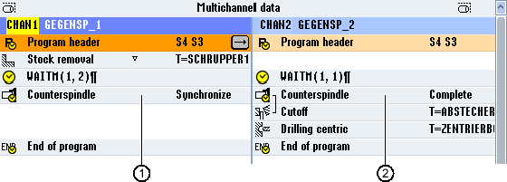

For multi-channel machines, the counter-spindle steps must be synchronized across all channels.
You program handling the counter-spindle in one channel. This channel controls the motion of the counter-spindle and adapts the zero offset of the channel.
In the synchronization step, the other channels park their tools in order to avoid collisions. The zero offset is also accepted.
① | Synchronization step |
② | Counter-spindle step |
The following counter-spindle steps, which implicitly contain WAIT marks, are identified using a symbol:
Pulling (take zero point = yes)
Machining side
Complete transfer
Synchronizing